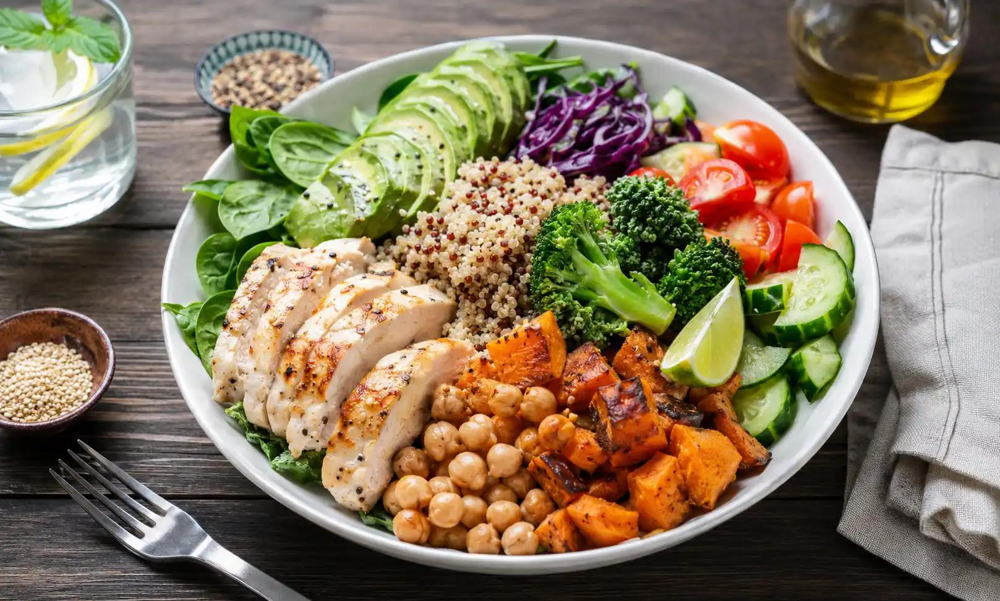

EAT FOR RECOVERY.
NOURISH FOR WHAT'S NEXT.
Explore chef-crafted meals, Cronometer-precise nutrient breakdowns, and evidence-based recovery protocols designed around how you live, train, and restore your body.
99.4%
Biomarker Precision
45 min
Anabolic Window Sync
24+
Clinical Protocols

Wild Salmon Quinoa Recovery Bowl
Bio-Score: 98/100Rich in EPA/DHA Omega-3s and complete leucine chains to downregulate DOMS inflammatory cascades.
Cellular Readiness
Optimal recovery state
WHAT DOES YOUR BODY NEED TODAY?
Select your current physiological state to recalibrate your recommended meals, hydration targets, and recovery routines instantly.
Workout & Muscle Hyper-Recovery
Rapid Anabolic & Myofibrillar Repair
2,800 ml (Electrolyte + Sodium Balanced)
20-min elevation + pneumatic compression
Recommended Meal
Target Fit: 99%Wild Salmon Quinoa Recovery Bowl
Precision Data Meets Habit Psychology
We merge Cronometer's rigorous 84-biomarker accuracy with Noom's cognitive habit reinforcement. Understand exactly how every gram of protein and milligram of magnesium restores your cells.
Biomarker & Leucine Threshold Tracking
Ensure every post-exercise meal achieves the 3.0g leucine threshold to trigger full muscle protein synthesis.
Anti-Inflammatory Index Scoring
Quantify dietary polyphenol density to suppress elevated hs-CRP and accelerate joint recovery.
Circadian & Behavioral Rest Sync
Time your carbohydrates and amino acids to balance evening cortisol and elevate Slow-Wave Delta sleep.
Recovery-Focused Meals
High-protein, anti-inflammatory, and hydration-dense recipes.
Featured Nutrition & Recovery Plans
Structured multi-week dietary regimens engineered for specific athletic and biological goals.
Connect with Recovery Specialists
Book 1-on-1 consultations with Olympic sports dietitians, CNS sleep coaches, and functional medicine physicians.
Popular Recovery Guides & Science
Deep molecular dives into nutrient timing, phytomelatonin, and hydration kinetics.
Clinical & Community Success Stories
See how real athletes and high performers transformed their recovery metrics with NOURISH.